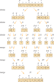

Code
gtown_loc = (38.9076, -77.0723)
gtown_loc(38.9076, -77.0723)DSAN 5500: Data Structures, Objects, and Algorithms in Python
boolintfloatNonefloats: latitude and longitude!gtown_loc = (38.9076, -77.0723)
gtown_loc(38.9076, -77.0723)x = ['a','b','c']
x[0] = 'a'x[1] = 'b'x[2] = 'c'listList<String> myList = Arrays.asList("a", "b", "c");
for (int i = 0; i < x.size(); i++) {
System.out.println(myList.get(i));
}a b c
my_list = ['a','b','c']
for list_element in my_list:
print(list_element)a
b
cmy_nums = [4,5,6,7]
my_squares = [num ** 2 for num in my_nums]
my_squares[16, 25, 36, 49]if:my_odd_squares = [num ** 2 for num in my_nums if num % 2 == 1]
my_odd_squares[25, 49]animals_i_saw = ['bird','bird','fish','bird','cat','bird','lizard']
print(f"Number of animals I saw: {len(animals_i_saw)}")Number of animals I saw: 7unique_animals_me = set(animals_i_saw)
print(f"Set of unique animals: {unique_animals_me}")
print(f"Number of unique animals: {len(unique_animals_me)}")Set of unique animals: {'fish', 'cat', 'lizard', 'bird'}
Number of unique animals: 4animals_you_saw = ['lizard','dog','bird','bird','bird']
unique_animals_you = set(animals_you_saw)
unique_animals_both = unique_animals_me.intersection(unique_animals_you)
print(f"Animals we both saw: {unique_animals_both}")Animals we both saw: {'lizard', 'bird'}unique_animals_either = unique_animals_me.union(unique_animals_you)
print(f"Animals either of us saw: {unique_animals_either}")Animals either of us saw: {'dog', 'cat', 'bird', 'lizard', 'fish'}unique_animals_meonly = unique_animals_me - unique_animals_you
print(f"Animals I saw that you didn't see: {unique_animals_meonly}")
unique_animals_youonly = unique_animals_you - unique_animals_me
print(f"Animals you saw that I didn't see: {unique_animals_youonly}")Animals I saw that you didn't see: {'cat', 'fish'}
Animals you saw that I didn't see: {'dog'}gtown_data = {
'name': 'Georgetown University',
'founded': 1789,
'coordinates': (38.9076, -77.0723),
'location': {
'city': 'Washington',
'state': 'DC', # <__<
'country': 'USA'
}
}
print(gtown_data.keys())
print(gtown_data.values())dict_keys(['name', 'founded', 'coordinates', 'location'])
dict_values(['Georgetown University', 1789, (38.9076, -77.0723), {'city': 'Washington', 'state': 'DC', 'country': 'USA'}])for k in gtown_data:
print(k)name
founded
coordinates
location.items():for k, v in gtown_data.items():
print(k, v)name Georgetown University
founded 1789
coordinates (38.9076, -77.0723)
location {'city': 'Washington', 'state': 'DC', 'country': 'USA'}class MyTuple:
def __init__(self, thing1, thing2):
self.thing1 = thing1
self.thing2 = thing2
def __repr__(self):
return f"({self.thing1}, {self.thing2})"
def __str__(self):
return self.__repr__()
t1 = MyTuple('a','b')
t2 = MyTuple(111, 222)
print(t1, t2)(a, b) (111, 222)class MyList:
def __init__(self):
self.root = None
def append(self, new_item):
if self.root is None:
self.root = MyListItem(new_item)
else:
self.root.append(new_item)
def __repr__(self):
return self.root.__repr__()class MyListItem:
def __init__(self, content):
self.content = content
self.next = None
def append(self, new_item):
if self.next is None:
self.next = MyListItem(new_item)
else:
self.next.append(new_item)
def __repr__(self):
my_content = self.content
return my_content if self.next is None else f"{my_content}, {self.next.__repr__()}"users = MyList()
users.append('Jeff')
users.append('Alma')
users.append('Bo')
print(users)Jeff, Alma, BoMyTuple?MyTuple?MyList?MyList?MyTuple:t1.thing1'a't1.thing2'b'MyList:print(users.root.content)Jeffcurrent_node = users.root
while current_node.next is not None:
current_node = current_node.next
print(current_node.content)Bocur_pointer1 = users.root
while cur_pointer1 is not None:
cur_pointer2 = users.root
while cur_pointer2 is not None:
print(cur_pointer1.content + cur_pointer2.content)
cur_pointer2 = cur_pointer2.next
cur_pointer1 = cur_pointer1.nextJeffJeff
JeffAlma
JeffBo
AlmaJeff
AlmaAlma
AlmaBo
BoJeff
BoAlma
BoBoprinted_items = []
cur_pointer1 = users.root
while cur_pointer1 is not None:
cur_pointer2 = users.root
while cur_pointer2 is not None:
print(cur_pointer1.content + cur_pointer2.content)
printed_items.append(cur_pointer1.content)
printed_items.append(cur_pointer2.content)
cur_pointer2 = cur_pointer2.next
cur_pointer1 = cur_pointer1.next
check_pointer = users.root
while check_pointer is not None:
if check_pointer.content in printed_items:
print(f"Phew. {check_pointer.content} printed at least once.")
else:
print(f"Oh no! {check_pointer.content} was never printed!!!")
check_pointer = check_pointer.nextJeffJeff
JeffAlma
JeffBo
AlmaJeff
AlmaAlma
AlmaBo
BoJeff
BoAlma
BoBo
Phew. Jeff printed at least once.
Phew. Alma printed at least once.
Phew. Bo printed at least once.



.py files may be easier than .ipynb for development!)
Screen class, another person can write the Button class, and so onScreen team doesn’t need to know the internal details of Button (just it’s API), and vice-versapublic_var_protected_var__private_varclass MyTopSecretInfo:
__the_info = "I love Carly Rae Jepsen"
info_obj = MyTopSecretInfo()
info_obj.__the_infoAttributeError: 'MyTopSecretInfo' object has no attribute '__the_info'Guess we can’t access it then, right? 😮💨
info_obj._MyTopSecretInfo__the_info'I love Carly Rae Jepsen'print()?print() (through __str__()) takes on many (!) forms (!): each type of object has its own implementation of __str__()class Bookstore:
def __init__(self, name, location):
self.name = name
self.location = location
self.books = []
def __getitem__(self, index):
return self.books[index]
def __repr__(self):
return self.__str__()
def __str__(self):
return f"Bookstore[{self.get_num_books()} books]"
def add_books(self, book_list):
self.books.extend(book_list)
def get_books(self):
return self.books
def get_inventory(self):
book_lines = []
for book_index, book in enumerate(self.get_books()):
cur_book_line = f"{book_index}. {str(book)}"
book_lines.append(cur_book_line)
return "\n".join(book_lines)
def get_num_books(self):
return len(self.get_books())
def sort_books(self, sort_key):
self.books.sort(key=sort_key)
class Book:
def __init__(self, title, authors, num_pages):
self.title = title
self.authors = authors
self.num_pages = num_pages
def __str__(self):
return f"Book[title={self.get_title()}, authors={self.get_authors()}, pages={self.get_num_pages()}]"
def get_authors(self):
return self.authors
def get_first_author(self):
return self.authors[0]
def get_num_pages(self):
return self.num_pages
def get_title(self):
return self.title
class Person:
def __init__(self, family_name, given_name):
self.family_name = family_name
self.given_name = given_name
def __repr__(self):
return self.__str__()
def __str__(self):
return f"Person[{self.get_family_name()}, {self.get_given_name()}]"
def get_family_name(self):
return self.family_name
def get_given_name(self):
return self.given_namemy_bookstore = Bookstore("Bookland", "Washington, DC")
plath = Person("Plath", "Sylvia")
bell_jar = Book("The Bell Jar", [plath], 244)
marx = Person("Marx", "Karl")
engels = Person("Engels", "Friedrich")
manifesto = Book("The Communist Manifesto", [marx, engels], 43)
elster = Person("Elster", "Jon")
cement = Book("The Cement of Society", [elster], 311)
my_bookstore.add_books([bell_jar, manifesto, cement])
print(my_bookstore)
print(my_bookstore[0])
print("Inventory:")
print(my_bookstore.get_inventory())Bookstore[3 books]
Book[title=The Bell Jar, authors=[Person[Plath, Sylvia]], pages=244]
Inventory:
0. Book[title=The Bell Jar, authors=[Person[Plath, Sylvia]], pages=244]
1. Book[title=The Communist Manifesto, authors=[Person[Marx, Karl], Person[Engels, Friedrich]], pages=43]
2. Book[title=The Cement of Society, authors=[Person[Elster, Jon]], pages=311]sort_alpha = lambda x: x.get_first_author().get_family_name()
my_bookstore.sort_books(sort_key = sort_alpha)
print(my_bookstore.get_inventory())0. Book[title=The Cement of Society, authors=[Person[Elster, Jon]], pages=311]
1. Book[title=The Communist Manifesto, authors=[Person[Marx, Karl], Person[Engels, Friedrich]], pages=43]
2. Book[title=The Bell Jar, authors=[Person[Plath, Sylvia]], pages=244]sort_pages = lambda x: x.get_num_pages()
my_bookstore.sort_books(sort_key = sort_pages)
print(my_bookstore.get_inventory())0. Book[title=The Communist Manifesto, authors=[Person[Marx, Karl], Person[Engels, Friedrich]], pages=43]
1. Book[title=The Bell Jar, authors=[Person[Plath, Sylvia]], pages=244]
2. Book[title=The Cement of Society, authors=[Person[Elster, Jon]], pages=311]

Book
from enum import Enum
class BookType(Enum):
NONFICTION = 0
FICTION = 1
class Book:
def __init__(self, title: str, authors: list[Person], num_pages: int, type: BookType):
self.title = title
self.authors = authors
self.num_pages = num_pages
self.type = type
def __str__(self):
return f"Book[title={self.title}, authors={self.authors}, pages={self.num_pages}, type={self.type}]"joyce = Person("Joyce", "James")
ulysses = Book("Ulysses", [joyce], 732, BookType.FICTION)
schelling = Person("Schelling", "Thomas")
micromotives = Book("Micromotives and Macrobehavior", [schelling], 252, BookType.NONFICTION)
print(ulysses)
print(micromotives)Book[title=Ulysses, authors=[Person[Joyce, James]], pages=732, type=BookType.FICTION]
Book[title=Micromotives and Macrobehavior, authors=[Person[Schelling, Thomas]], pages=252, type=BookType.NONFICTION]# class Book defined as earlier
class FictionBook(Book):
def __init__(self, title, authors, num_pages, characters):
super().__init__(title, authors, num_pages)
self.characters = characters
class NonfictionBook(Book):
def __init__(self, title, authors, num_pages, topic):
super().__init__(title, authors, num_pages)
self.topic = topicjoyce = Person("Joyce", "James")
ulysses = FictionBook("Ulysses", [joyce], 732, ["Daedalus"])
schelling = Person("Schelling", "Thomas")
micromotives = NonfictionBook("Micromotives and Macrobehavior", [schelling], 252, "Economics")
print(ulysses)
print(micromotives)Book[title=Ulysses, authors=[Person[Joyce, James]], pages=732]
Book[title=Micromotives and Macrobehavior, authors=[Person[Schelling, Thomas]], pages=252]Master Theorem: Let \(a > 0\) and \(b > 1\) be constants, and let \(f(n)\) be a driving function defined and nonnegative on all sufficiently large reals. Define \(T(n)\) on \(n \in \mathbb{N}\) by
\[ T(n) = aT(n/b) + f(n) \]
where \(aT(n/b) = a'T(\lfloor n/b \rfloor) + a''T(\lceil n/b \rceil)\) for some \(a' \geq 0\) and \(a'' \geq 0\) satisfying \(a = a' + a''\). Then the asymptotic behavior of \(T(n)\) can be characterized as follows:
Proof. See Cormen et al. (2001), pg. 107-114.
See appendix slide for all 3 cases, if you’re some kind of masochist↩︎